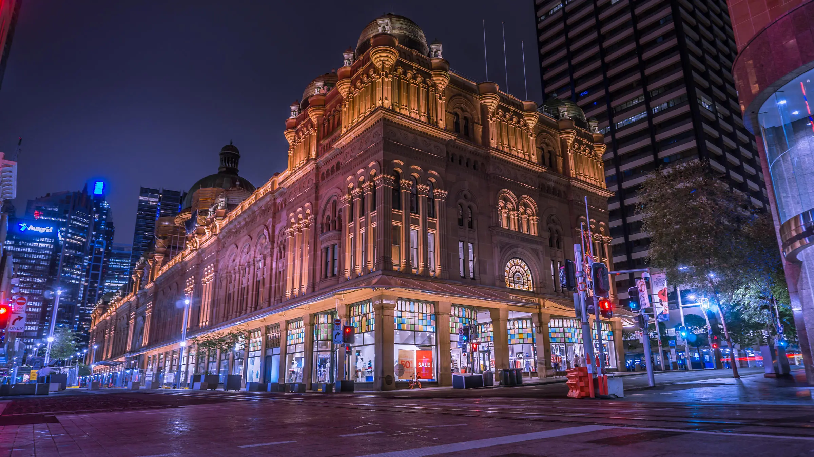

Coastal Crown Route
Follow the ocean breeze along Australia’s southeastern coast, where royal landmarks meet sunlit harbors.
The Coastal Crown Route takes you through seaside palaces, colonial ports, and coastal estates that once hosted royal envoys and dignitaries.
Highlights include Sydney’s Government House, the Queen Victoria Building, and the Royal Botanic Gardens.
View Gallery